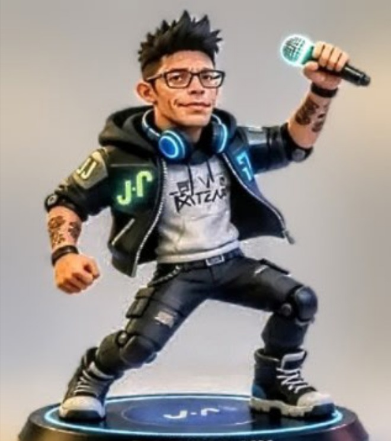

Blue Dimension — Radio LoRa 97.5
DJ Jesse Jay & Juicy J · dokumentierte Playlist von 2025 · sechs Aufnahmen.
BLUE DIMENSION — Progressive House, Techno, Deep House und Organic House. Vinylgeprägter Clubsound zwischen Tiefe, Rhythmus und hypnotischen Spannungsbögen.
DJ Jesse Jay & Juicy J · dokumentierte Playlist von 2025 · sechs Aufnahmen.
Deep House, Progressive House und Techno aus Zürich und darüber hinaus.

DJ Jesse Jay ist ein seit 1997 aktiver Zürcher DJ für elektronische Musik. Die musikalische Identität ist in Vinyl-Kultur und Zürcher Underground-Clubkultur verwurzelt.
Progressive House, House, Techno, Deep House und verwandte elektronische Stile.
Die dokumentierte Radio-Geschichte verbindet Galaxy Space Night mit der heutigen Blue-Dimension-Identität.
Öffentliche Claims und Metadaten werden im Repository versioniert und mit Provenance-Informationen geführt.
Deep Navy, Electric Cyan, Neon Blue, Metallic Silver und Golden Yellow bilden die visuelle Sprache für Signal, Radiowellen, Vinyl und audio-reaktive Strukturen.
Die Website folgt der Repository-Regel: Evidence → Canonical Profile → Structured Data → Website.
Für Booking-Anfragen direkt Kontakt aufnehmen. Angaben zu Datum, Veranstaltungsort, Setdauer und gewünschter musikalischer Ausrichtung helfen bei der Abstimmung.
DJ Jesse Jay · Zürich Underground seit 1997 · Progressive House / Techno / Deep House / Organic House.
Michael Fellner
Wallisellenstrasse 12
8600 Dübendorf
Schweiz
E-Mail: info@djjessejay.ch